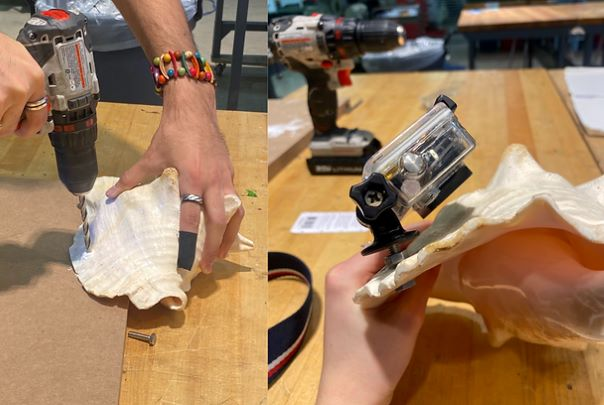
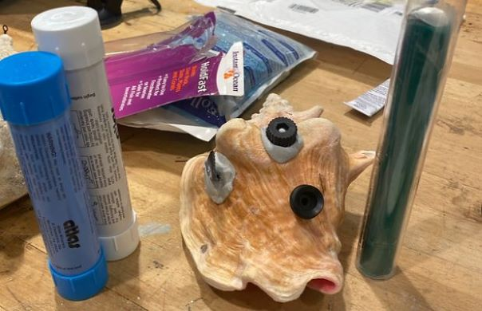
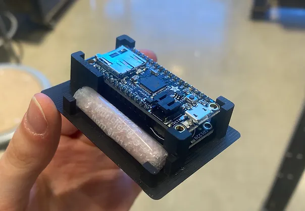

What is the Snail Tracker Project?
In collaboration with the Shedd Aquarium, a team of 3 undergraduates and I worked with a researcher to optimize their accelerometer package attachment, alignment, and data cleaning to better inform where marine protected areas (MPAs) should be placed for Queen Conch snails.
How were you involved?
Role: Project Member
Time: September 2020 - March 2021
Tools/Skills: Basecamp, Product Design, Project Management, Design for Assembly,
The Problems
Attachment was inefficient (resource and time-wise) and was inconsistent
Alignment heading was inconsistent due to attachment, altering data
Our Goals
Minimize the inconsistencies in data
Improve ease of use in package attachment
Reduce overall steps in facilitating the experiment
User Journey
Process
Research + Ideation
I researched two main areas of interest:
Small animal tracking and underwater tracking with accelerometers
Accelerometer batteries and power
From this research I concluded for our team that the most cost-effective device for the researcher was the current device.
For battery and power, I suggested a battery pack for the accelerometer that doubled the capacity, eliminating the the second dive to swap battery packs.
Prototyping
My prototyping focused on how to improve the attachment of the device on the shell. I tested adhesives, suction cups, and mechanical methods of attachment (pictured). The following were my criteria for attachment:
Non-corrosive, reusable parts
Secure attachment (determined by no device shifting when force applied)
Consistent across all shells
Quick and easy to perform alone
Mechanical Attachment Testing
Adhesive Testing
Arduino Cradle
Final Design Proposal
Attachment
New combination of bolts, nuts, and washers
Quicker, securer attachment to wider range of shells
Reusable, non-corrosive parts
Device Identification System
Easy identification through bright numbered stickers
Arduino Positioning Cradle:
Prevents internal components from shifting
Consistent placement of accelerometer
Angle Measurement Tool + ImageJ
Plastic, foldable tool to allow consistent image capture of each shell
ImageJ software to measure angle offset of each package to snail heading for data correction